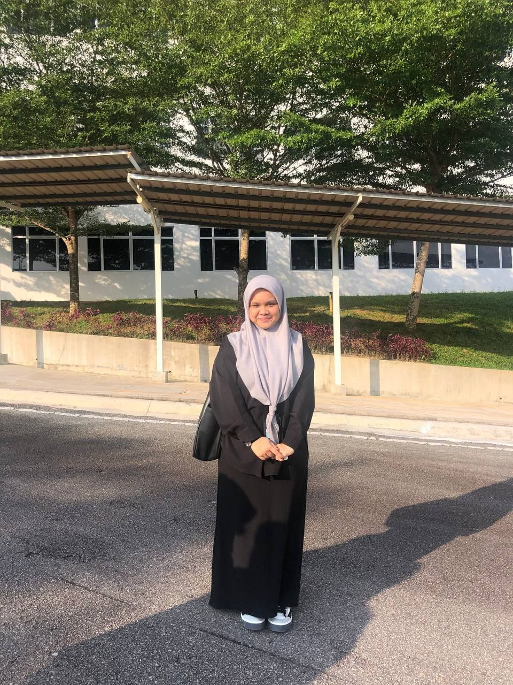

ABOUT ME
ABOUT ME
My name is Nur Ain Suriani binti Sarizam, and I am from Port Dickson, Negeri Sembilan. Currently, I am pursuing a Diploma in Information Management at UiTM Rembau. Being the only one in my family to continue education at the university level,my goal is simple but meaningful: I want to make my parents proud of me for the hard work I am putting into my studies.
I would describe myself as an ambivert; I adapt to my surroundings, sometimes enjoying quiet moments alone and,other times, joining friends for group activities. In my free time, I like to relax by taking a nap or going for a walk.These moments help me recharge, providing a balance between my need for solitude and my desire to connect with others.
I come from a family of five siblings, with one brother and three sisters. While my family is incredibly supportive,my educational journey has been somewhat unique.With no family members who attended university before me,I rely on my friends and lecturers for guidance on how to navigate university life. This independence is both a challenge and a source of strength, pushing me to find my own way while knowing that I am setting an example for my younger siblings.
My early school years were filled with excitement and active participation. In primary school, I eagerly joined academic and extracurricular competitions, finding joy and fulfillment in every challenge. However, this enthusiasm dimmed when I moved to a secondary religious school, where I felt too shy to participate as actively as before. By the time I turned 16, I made the choice to switch to a regular secondary school, a decision that brought back the joy of active involvement and allowed me to rediscover my confidence.
I come from a family of five siblings, with one brother and three sisters. While my family is incredibly supportive,my educational journey has been somewhat unique. With no family members who attended university before me, I rely on my friends and lecturers for guidance on how to navigate university life. This independence is both a challenge and a source of strength,pushing me to find my own way while knowing that I am setting an example for my younger siblings.
Contact Information
Phone Number: 01123008722
Instagram: @ainsarizam
Quotes of the day:
- First Code
"Striving Success Without Look Back"
- Second Quote
"Catch it Until You Get It"Nur Ain Suriani @ainsarizam
21 o C